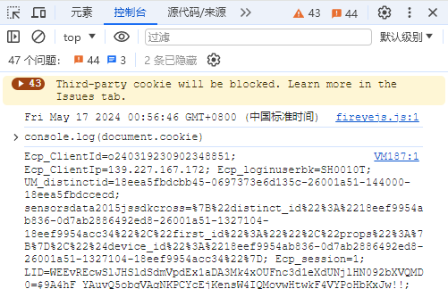

Selenium 爬取知网记录
Selenium 爬取知网记录
前言
今天记录一下如何爬取知网的流程以及一些要点哈。
cookies获取&注入
如果直接用selenium登录知网的话，知网这边是没有登录记录，想要下载文章是做不到的，这里就是cookies登场的时候了。
首先，我们需要先登录一次知网，然后登录之后，打开浏览器的开发者模式，在控制台输入console.log(document.cookie),然后把这里的cookies复制到剪切板中。
之后只需要在driver.add_cookie(cookie)传入每一个cookie，这里的cookie需要做一些字符串处理，这里就不多加赘述啦

采用xpath提取元素
原先我一直是使用class或者id的方式来获取元素，这里推荐可以使用xpath来获取元素，其最主要的原因是既准确又快速，准确在哪呢？xpath由于是以路径的方式来访问元素，不会因为有多个元素有相同的class或者id而混淆，快速在哪呢？
这里不得不又得提到chrome的开发者模式，我们可以点击想要爬取的元素，然后右键，选择复制中的复制完整xpath来获得，如图所示。
！
切换窗口
由于selenium会点击一个选项，这个选项弹出一个新的窗口，但是我的driver的控制权还是在原来那个窗口上，而这个时候就需要来将控制权切换到新的窗口中，其具体代码如下：1
2handles = driver.window_handles
driver.switch_to.window(handles[-1])
handles = driver.window_handles: 这行代码获取当前浏览器会话中所有窗口的句柄列表，存储在变量 handles 中。driver.switch_to.window(handles[-1]): 这行代码实际上是切换到列表中的最后一个窗口。在 Python 中，handles[-1]代表列表的最后一个元素，因此这是当前打开的最新窗口或标签页的句柄。调用driver.switch_to.window()并传入这个句柄，WebDriver 的控制权就会切换到这个新打开的窗口或标签页。
及时关闭不需要的窗口
由于我在爬取知网的时候，每点击一个论文就会弹出一个新的弹窗，然后随着页面的增多，渐渐的太占内存了，导致速度越来越慢，所以这个时候就需要将之前的那些窗口关闭掉。我这简单的示例如下：1
2
3
4n2 = driver.window_handles
if len(n2) > 1:
driver.close()
driver.switch_to.window(n2[0])
这里的程序就是如果页面大于1，那就把当前的页面关闭了，然后聚焦0号句柄的页面，但是需要注意一点：
确保在调用 driver.close() 之前，已经确定不再需要当前聚焦的窗口，因为一旦关闭，就无法再重新打开该窗口进行操作。
在使用 driver.switch_to.window() 切换窗口时，确保提供的句柄是有效的，否则会引发错误。


{kind=link}